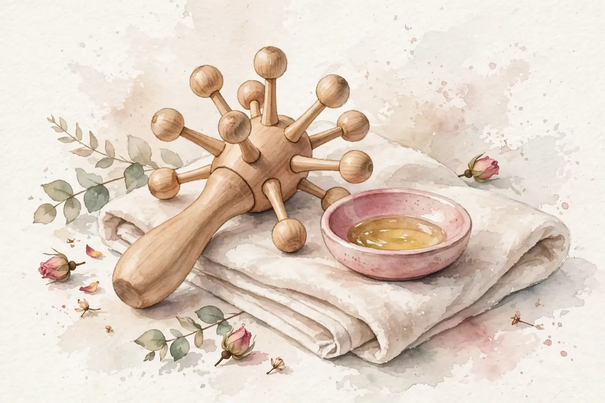

トップ ＞ ヘアケア ＞ 頭皮マッサージの手順：施術の現場から
頭皮マッサージの手順：施術の現場から

ヘッド施術の中心は、指の腹で頭皮に触れる手技です。自宅でも、シャンプーのついでや入浴後の時間に、同じ考え方で頭皮に触れることができます。この記事では、現場の手順を自宅向けに紹介します。これはリラックスのための一般的なケアの紹介で、医療行為や診断ではありません。
指の腹で「動かす」のが基本
手順の基本は、指の腹を頭皮に当て、頭皮そのものを小さく動かすことです。髪の上からこするのではなく、指を置いた場所の頭皮を、前後左右にゆっくり動かします。使うのは両手の指の腹で、爪は立てません。力加減は、気持ちよいと感じる弱めの圧が目安です。痛みを感じる圧は強すぎます。
動かす範囲は小さくて構いません。1か所につき数秒、場所を少しずつずらしながら進めます。急いで広く動かすより、置いた場所を丁寧に動かす方が、現場の感覚に近くなります。呼吸をゆっくり合わせると、力の入り過ぎを防げます。
場所の順番は「側頭部→頭頂部→後頭部」
順番は、耳の上の側頭部から始め、頭頂部、最後に後頭部へ進むのが、施術でも使う流れです。側頭部は指が届きやすく、力の調整もしやすい場所です。頭頂部は両手の指を広げて、包むように当てます。後頭部は、頭を少し前に倒すと指が届きやすくなります。
場所ごとに、頭皮の動き方の感じは違います。動きにくい場所があっても、それ自体は異常ではありません。いつもの自分の状態を知ることが目的です。チェックの考え方は、別記事「頭皮のこわばりチェック（ヘッド施術の現場から）」でも紹介しています。
タイミングと、注意したいこと
行うタイミングは、シャンプーの最中か、入浴後のリラックスした時間がおすすめです。頻度は毎日でなくて構いません。週に数回、決まったタイミングに組み込むと続けやすくなります。時間は5分程度からで十分です。
頭皮に痛み、かゆみ、できもの、傷などがある場合は、その場所を避けるか、行わないでください。気になる状態が続く場合は、セルフケアで判断せず、皮膚科などの専門家に相談してください。マッサージは心地よさの範囲で行うものです。無理のない範囲で自分の手の感覚を育てていく。その積み重ねが、頭皮への理解につながります。
使う道具についても触れておきます。基本は自分の指の腹ですが、市販のマッサージ用具を使う場合は、先端が頭皮を傷つけにくい形状かどうかを確認してください。道具を使う場合も、力加減は「気持ちよい範囲」が目安です。強い刺激を求めるほど、頭皮への負担も増えます。道具は補助であり、感覚の主役は自分の手と頭皮です。
施術の現場では、お客様の頭皮の状態に合わせて、その日の触り方を変えます。張りを強く感じる日は圧を弱く、短い時間で切り上げることもあります。自宅のケアでも、その日の体調や気分に合わせて、時間と圧を調整して構いません。決まった手順を守ることより、状態に合わせて変えることの方が、長く続けるうえでは大切です。
マッサージの時間の使い方にも、現場の考え方があります。全体をまんべんなく触る日と、気になる場所を中心に触る日を分けると、短い時間でも満足感が得やすくなります。毎日同じ手順でなくて構いません。その日の状態に合わせて範囲を決めることが、続けるコツです。また、入浴中は身体が温まっていて、手も滑りにくいため、自宅のマッサージには向いた場面です。シャンプーの泡の上で行うと、指の滑りが調整しやすくなります。場面を選ぶことも、手順の一部です。
マッサージの前後で、頭皮の感触を触って確かめる習慣もおすすめです。前後の違いを感じることが、手の感覚を育てます。感覚が育つと、力加減の調整も自然にできるようになります。
セラフィナ「マッサージは指の腹で、頭皮を小さく動かすのが基本。力は弱めでいいんだね」